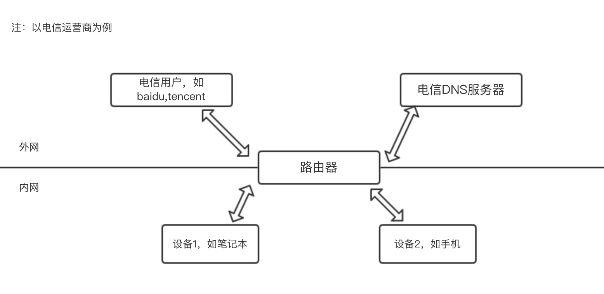
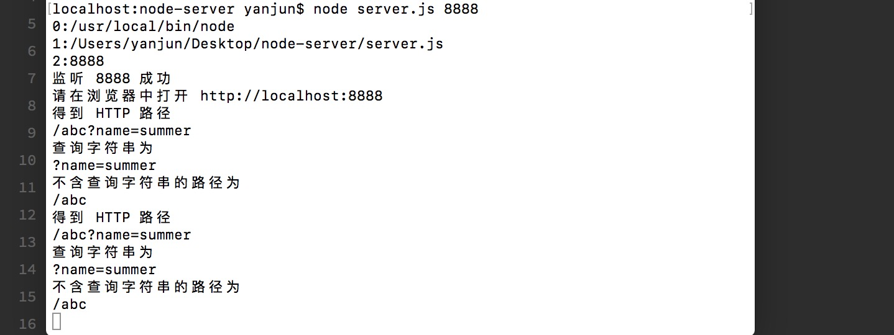

一、网络和常用IP
HTTP协议的底层其实是由TCP协议(Transmission COntrol Protocol，传输控制协议)和IP协议构建的(Internet Protocol，网络协议)，二者合称TCP/IP。在此处我们不进行过多的了解，只需记住以下两点：
1、TCP和UDP的区别是什么？
TCP可靠、面向连接，相对UDP较慢；可靠是指发起一个请求，成功或者不成功都是知道的，
UDP不可靠，不面向连接、相对TCP较快。参考链接
2、TCP的三次握手指的是什么？
每次建立连接前，客户端和服务端都要进行三次对话才会开始正式传输内容，三次对话大概是这样：
- 客户端：我要连接你了，可以么？
- 服务端：嗯，我准备好了，连接我吧
- 客户端：那我连接你咯
- 开始后买呢的步骤
详情请参考
3、IP网络协议
只要在互联网中，那么你就会有一个IP。通俗上理解，IP分为[内网IP]和[外网IP]。具体如下图所示：

外网之间可以直接互相访问，内网之间可以直接互相访问，但是内网外网之间访问一定要通过路由，不可直接访问。
除了内网IP和外网IP之外有两个特殊IP需要强制记忆
- 本地IP:127.0.0.1 本地IP永远表示设备自己。可以在终端ping 127.0.0.1，可发现响应速度非常快。默认情况下。hosts文件也会有一行127.0.0.1 localhost，意思就是localhost指向127.0.0.1，所以localhost也表示设备自己。
- 0.0.0.0：不表示任何设备。这个IP不同地方有不同的含义，后期在补充介绍。
二、端口号
提供HTTP服务：使用80端口
提供HTTPS服务：使用443端口
提供FTP服务：使用21端口
一个端口只对应一个服务，以上只是大家约定俗称，可以重新定义。但是最好遵循越冬。
1、端口定义
维基百科把0到1023号端口对应的服务都进行说明了。
2、端口个数
每个机器共有65536（2的16次方减1）个端口。这些端口的使用有一些规定
- 0到1023（2的10次方减1）号端口是留给系统使用的。只有具有管理员权限后才能使用这些窗口。
- 其他端口给普通用户使用
- 如果端口被占用则不能再占用此端口。需要先停掉正在占用的这个端口。
三、NodeJS实现一个服务器
- cd ~/Desktop;mkdir node-demo;cd node-demo//创建一个目录
- touch server.js //创建文件
- 编辑server.js
- 在终端运行node server.js
- 根据错误提示进行调试，成功之后会持续运行，若需要中断退出，ctrl+c即可
1、无响应的服务器1
2
3
4
5
6
7
8
9
10
11
12
13
14
15
16
17
18
19
20
21
22
23
24
25
26
27var http = require('http')
var fs = require('fs')
var url = require('url') //以上为引入nodejs模块
var port = process.argv[2]
process.argv.forEach(function(val,index,array){
console.log(index + ':' + val)
})
if(!port){
console.log('请指定端口？\n 像这样：node server.js 8888')
process.exit(1)
}
var server = http.createServer(function(request, response){ //建立一个服务
console.log(request)
var parsedUrl = url.parse(request.url, true)
var path = request.url
var query = ''
if(path.indexOf('?') >= 0){ query = path.substring(path.indexOf('?')) }
var pathNoQuery = parsedUrl.pathname
var queryObject = parsedUrl.query
var method = request.method
console.log('得到 HTTP 路径\n' + path)
console.log('查询字符串为\n' + query)
console.log('不含查询字符串的路径为\n' + pathNoQuery)
})
server.listen(port)
console.log('监听 ' + port + ' 成功\n请在浏览器中打开 http://localhost:' + port)
其中第5-7行，因为不明白process.argv到底是什么，所以输出一下，打印出来的结果为：

输出的结果为一个数组，数组第一个值表示的是node，即node文件位置，第二个是JavaScript文件的文件位置，第三个是发起此请求的端口号。
2、加入响应语句
在上面代码的第24行后继续输入：1
2response.write('Hi')
response.end()
另外打开一个终端，并输入：1
curl -s -v "localhost:8888/abc?name=summer" //则会在此终端显示请求和响应的详细信息
3、路径设置
接下来，如果我们访问根目录的话则返回hi，否则返回404，我们需将2中的代码替换为：1
2
3
4
5
6
7if(path == '/'){
response.write('hi\n')
response.end()
}else{
response.statusCode = 404 //默认返回的状态码为200，此处已指定为404
response.end()
}
4、增加/index路径，返回html页面
增加新的路径只需在上述的基础上增加一条判断语句：1
2
3
4
5
6else if(path == '/index'){
//如果不设置Content-Type:text/html，则会将response.write()中的内容转换成字符串输出到浏览器，charset=utf-8是因为server.js文件是utf-8编码，这样的话中文也能完整输出，不会乱码
response.setHeader('Content-Type','text/html;charset=utf-8')
response.write('<!Doctype><html><head></head><body><h1>123</h1></body></html>')
response.end()
}
四、HTML & CSS & JS & JSON的本质
1、不同文件对应的Content-Type
- css -> text/css
- js -> text/javascript
- html ->text/html